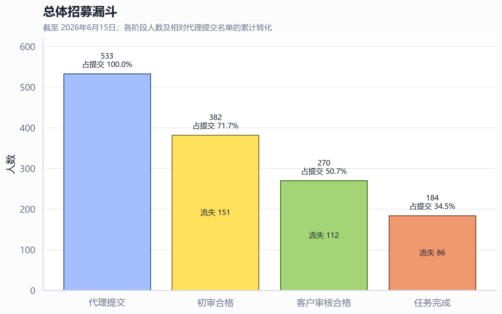
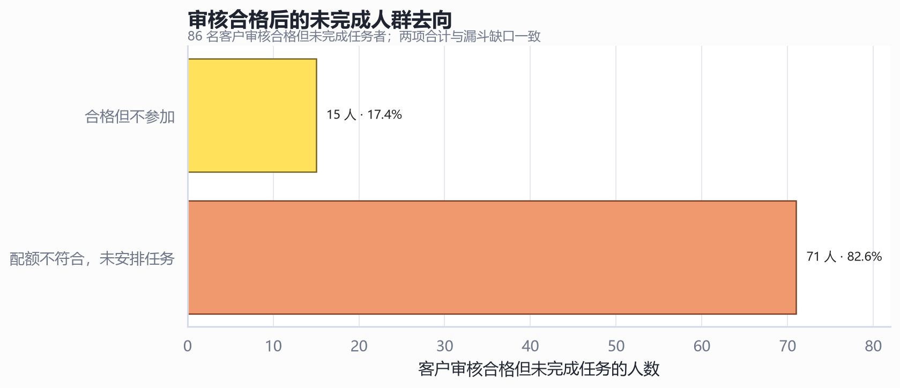
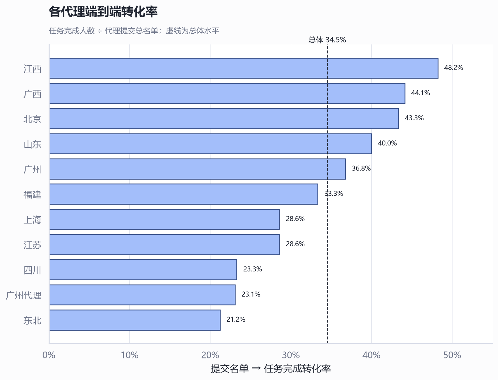
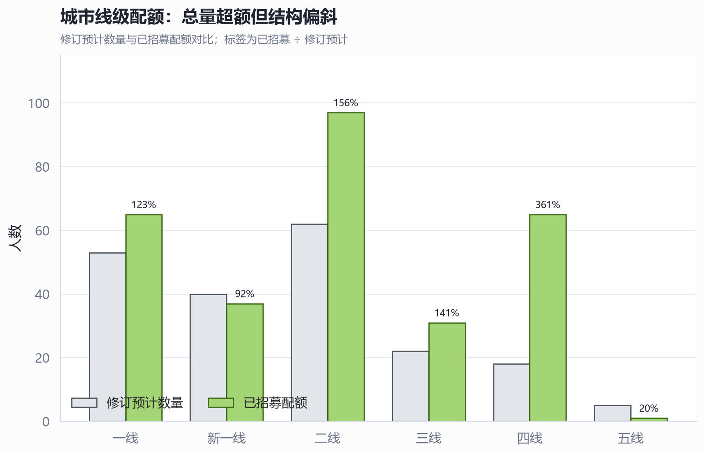
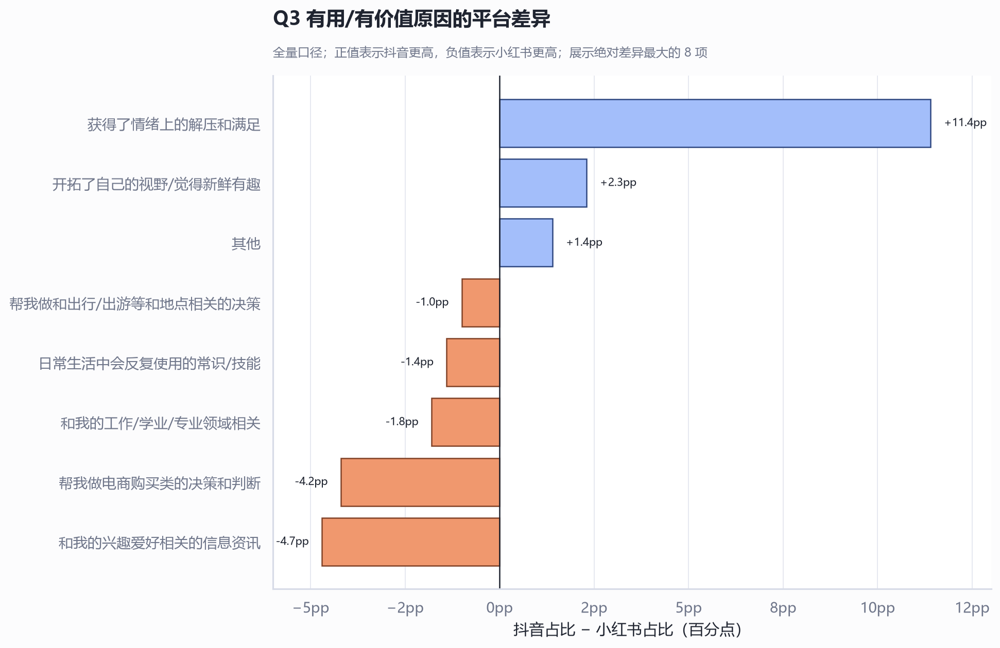
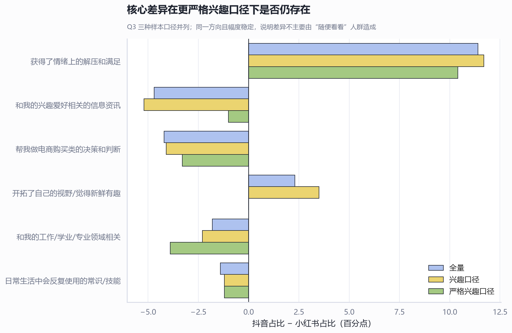

抖小有用性项目招募与渠道数据分析
围绕代理漏斗、配额结构和抖音/小红书价值感知差异的结构化复盘
Executive Summary｜执行摘要
- 招募“有量但转化偏低”。 533 份代理提交最终完成任务 184 人，端到端转化率 34.5%；初审、客户审核、任务执行三个阶段分别流失 151、112、86 人，损耗并非集中在单一环节。
- 审核后的最大阻塞是配额不匹配。 270 名客户审核合格者中，86 人未完成任务，其中 71 人（82.6%）因配额不符合而未安排任务，仅 15 人明确不参加。相比继续扩大粗放招募，优先修正定向配额更可能提升产出。
- 修订目标已超额，但城市线级结构明显失衡。 配额表的修订预计为 200 人、已招募 257 人（128.5%）；四线达到 361%，五线仅 20%，新一线 92.5%。结构性超配与 71 人“过库但配额不符”相互印证。
- 两平台的“有用”不是同一种有用。 抖音更突出情绪解压（22.1% vs 10.7%，+11.4pp），小红书更突出兴趣资讯、电商决策和工作/专业价值；严格排除“随便看看”后，情绪价值差异仍为 +10.4pp，方向稳定。
一、漏斗损耗分散，但审核后的结构性浪费最可控
端到端仅约三分之一完成。 代理名单进入初审的通过率为 71.7%，初审到客户审核合格为 70.7%，客户审核合格到任务完成为 68.1%。三个阶段的阶段转化接近，说明需要同时管理上游名单质量、客户审核标准和任务分配效率。

最值得优先处理的是“已合格但无法安排”。 86 名客户审核合格但未完成者与表中两类去向完全对平：71 名配额不符合、15 名不参加。前者是可通过更准确的招募指令、配额预警和候选人调剂降低的运营损耗。

二、代理表现差异来自不同阶段，不能只看最终完成率
江西、广西、北京和山东的端到端转化较高。 江西以 48.2% 居首，广西 44.1%、北京 43.3%、山东 40.0%；广州贡献 50 名完成者，是绝对量最大的渠道，但转化率 36.8%，略高于总体 34.5%。

相同的低结果可能对应不同问题。 四川客户审核合格后的完成率高达 85%，但初审通过率只有 45.2%，问题主要在上游名单质量；上海初审通过率 95.2%，但客户审核后完成率只有 46.2%，其 7 名配额不匹配占审核后未完成的全部，问题更偏向配额结构。
| 代理/地区 | 提交 | 初审合格 | 客户合格 | 任务完成 | 端到端转化 | 配额不符 | 不参加 |
|---|---|---|---|---|---|---|---|
| 广州 | 136 | 104 | 71 | 50 | 36.8% | 16 | 5 |
| 江西 | 56 | 46 | 37 | 27 | 48.2% | 7 | 3 |
| 山东 | 45 | 35 | 28 | 18 | 40.0% | 10 | 0 |
| 四川 | 73 | 33 | 20 | 17 | 23.3% | 0 | 3 |
| 江苏 | 56 | 30 | 23 | 16 | 28.6% | 7 | 0 |
| 广西 | 34 | 27 | 19 | 15 | 44.1% | 4 | 0 |
| 北京 | 30 | 27 | 19 | 13 | 43.3% | 5 | 1 |
| 福建 | 36 | 25 | 18 | 12 | 33.3% | 3 | 3 |
| 东北 | 33 | 27 | 17 | 7 | 21.2% | 10 | 0 |
| 上海 | 21 | 20 | 13 | 6 | 28.6% | 7 | 0 |
| 广州代理 | 13 | 8 | 5 | 3 | 23.1% | 2 | 0 |
三、配额总量超额掩盖了线级错配
以修订预计 200 人为基准，已招募 257 人，达成 128.5%。 但超额主要集中在四线（65 人 vs 18 人，361%）和二线（97 人 vs 62 人，156%）；五线只有 1 人 vs 5 人，新一线也略低于修订预计。总量达成无法代表配额可用。

| 城市线级 | 修订预计 | 已招募 | 达成率 | 差额 |
|---|---|---|---|---|
| 一线 | 53 | 65 | 122.6% | +12 |
| 新一线 | 40 | 37 | 92.5% | -3 |
| 二线 | 62 | 97 | 156.5% | +35 |
| 三线 | 22 | 31 | 140.9% | +9 |
| 四线 | 18 | 65 | 361.1% | +47 |
| 五线 | 5 | 1 | 20.0% | -4 |
年龄与性别总体较平衡，城市线级更需要调度。 女性和男性均约为修订预计的 128%；年龄段仅“18岁以下/18-”为 9 人 vs 11 人，其余年龄段均超额。因而下一阶段应优先按线级而非性别扩招，并将四线超额候选人是否可以弹性靠近相邻配额作为明确规则。
四、抖音提供情绪价值，小红书更偏工具与决策价值
兴趣入口不同。 抖音更常由“长期喜欢的主题”（37.8% vs 29.1%）和“刷到随便看看”（36.0% vs 28.1%）触发；小红书更常由“爱好特长”（23.3% vs 15.7%）以及“工作生活相关”（24.1% vs 14.1%）触发。Q1 为多选题，因此选项占比不能相加为 100%。
不感兴趣的第一原因高度一致，但衰退机制不同。 两平台约 36%–37% 的无兴趣源于主题完全不相关；小红书更常出现“以前感兴趣、现在不感兴趣”（13.9% vs 7.9%），抖音则更常出现“内容没用/没价值”（7.9% vs 4.9%）和“类似内容太多”（5.3% vs 2.9%）。
价值感知差异最集中在情绪解压。 抖音“获得情绪上的解压和满足”高出小红书 11.4 个百分点；小红书在兴趣资讯、电商购买决策、工作/专业领域等工具性价值上更高。

| 题目 | 关键选项 | 抖音 | 小红书 | 差值(pp) |
|---|---|---|---|---|
| Q1 感兴趣 | 长期喜欢的主题 | 37.8% | 29.1% | +8.6 |
| Q1 感兴趣 | 和工作生活相关 | 14.1% | 24.1% | -10.0 |
| Q2 不感兴趣 | 主题完全无关 | 37.3% | 36.4% | +0.9 |
| Q2 不感兴趣 | 以前感兴趣、现在不感兴趣 | 7.9% | 13.9% | -5.9 |
| Q3 有用价值 | 获得情绪上的解压和满足 | 22.1% | 10.7% | +11.4 |
| Q3 有用价值 | 兴趣爱好相关的信息资讯 | 38.1% | 42.8% | -4.7 |
| Q3 有用价值 | 帮助电商购买决策 | 3.6% | 7.8% | -4.2 |
情绪价值结论通过更严格口径检验。 当样本限定为“兴趣题=是我的兴趣”且排除“刷到随便看看”时，情绪解压差异仍为 +10.4pp；与此同时，“兴趣资讯”的差距从 -4.7pp 收窄到 -1.0pp。这说明抖音的情绪价值优势不是仅由弱兴趣浏览者造成，而兴趣资讯差异对样本定义更敏感。

建议的下一步
- 把招募从“总量驱动”切换为“缺口驱动”。 每日发布剩余线级×年龄×性别×活跃度的缺口清单，并对已满配额暂停泛招。
- 新增“可用过库率”作为代理指标。 除初审通过率、客户通过率、完成率外，追踪“客户合格且可分配任务 ÷ 客户合格”，直接约束配额错配。
- 对代理做分阶段治理。 四川优先改善上游名单筛选；上海、东北、山东优先解决配额预校验和合格后调剂；广州在保持规模的同时对齐整体转化基线。
- 统一 360/200/184 的口径与快照。 明确原目标、修订目标、已招募、正式用户、已完成与预计完成的互斥关系，并给每个数字加“截至日期”。
- 后续内容策略分别强化平台原生价值。 抖音侧重点可放在情绪满足与新鲜感，同时降低“没用/重复”；小红书侧继续强化可操作资讯、购买决策与专业/生活相关性。
进一步需要确认的问题
- 配额表中的原目标 360 与修订预计 200，哪一个是 6月15日之后仍有效的正式目标？
- “已完成任务配额 184”与右侧 89 + 55 + 40 的周次拆分，是否分别代表“已分配/预计完成”与“实际完成”？
- 71 名配额不匹配者能否跨代理、跨相邻线级或跨周调剂？若可以，理论上可回收多少完成量？
- 问卷两平台样本是否来自同一批受访者？若为配对样本，应使用配对检验，而不是独立样本近似。
Caveats｜口径与限制
- 分析基于工作簿汇总表，没有个人级明细，无法复核去重、交叉标签冲突或同一人跨阶段状态。
- 文件名显示数据截至 2026年6月15日，但表内没有统一的快照时间字段；不同表可能处于不同更新时点。
- Q1 为多选题；Q2/Q3 的选项计数与样本量对平。报告中的平台差异是描述性差异；显著性判断若用于正式结论，仍需确认抽样和配对设计。
- 配额表的 360、200、184 与周次拆分存在并行口径，报告已分别解读但未擅自合并为单一进度。